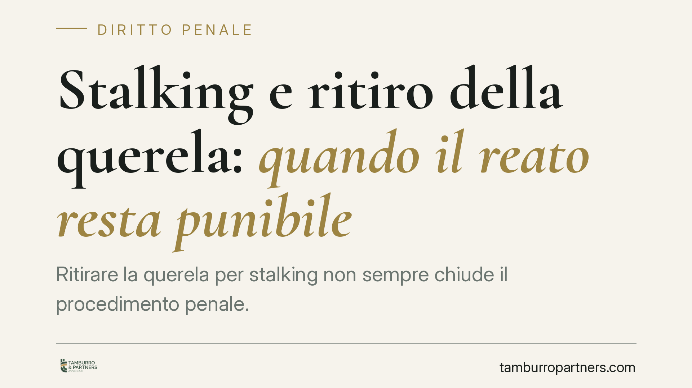

Stalking e ritiro della querela: quando il reato resta punibile
Ritirare la querela per stalking non sempre chiude il procedimento penale. Con la sentenza 7706/2026 la Cassazione precisa che, quando lo stalking si intreccia con un reato procedibile d'ufficio, la remissione non produce effetti estintivi. Una distinzione tecnica che incide concretamente su vittime e imputati, e che merita di essere compresa prima di ogni scelta processuale.

Il fatto
La Corte di Cassazione, con la sentenza n. 7706/2026, è tornata su un tema ricorrente: gli effetti della remissione della querela nel reato di atti persecutori (stalking), previsto dall'art. 612-bis del codice penale.
Il principio è netto. Quando lo stalking risulta connesso a un altro reato procedibile d'ufficio – cioè perseguibile anche senza l'impulso della persona offesa – il ritiro della querela non estingue la responsabilità penale. Il procedimento prosegue.
Inquadramento normativo
Lo stalking è, di regola, un reato procedibile a querela della persona offesa. L'art. 612-bis c.p. prevede un termine più ampio rispetto a quello ordinario: la querela va proposta entro sei mesi (anziché entro i tre mesi previsti dall'art. 124 c.p. per la generalità dei reati querelabili). Questo termine semestrale è una caratteristica propria della fattispecie fin dalla sua introduzione, nel 2009, e non va confuso con le modifiche successive.
La querela per stalking è, in linea generale, rimettibile. Diventa però irrevocabile in alcune ipotesi aggravate: l'art. 612-bis, comma 4, stabilisce l'irrevocabilità quando il fatto è stato commesso mediante minacce reiterate nelle forme aggravate di cui all'art. 612, comma 2, c.p. Questa disciplina è stata consolidata dalla L. 69/2019 (cosiddetto Codice Rosso). Fuori da tali ipotesi, la remissione resta possibile.
Il punto su cui interviene la Cassazione è diverso e ulteriore: non riguarda l'irrevocabilità in sé, ma la procedibilità d'ufficio per connessione. Se lo stalking si accompagna a un reato autonomo che la legge persegue d'ufficio, la querela ritirata non ferma il procedimento, perché l'azione penale trova fondamento altrove.
Il caso della violazione del divieto di avvicinamento
Occorre distinguere due piani che spesso vengono confusi.
Il divieto di avvicinamento ai luoghi frequentati dalla persona offesa è una misura cautelare, disciplinata dall'art. 282-ter c.p.p. (l'allontanamento dalla casa familiare è invece regolato dall'art. 282-bis c.p.p.). Si tratta di provvedimenti del giudice, non di autonome figure di reato.
La loro violazione, però, costituisce un reato a sé. L'art. 387-bis c.p. – introdotto dalla L. 69/2019 e rubricato "Violazione dei provvedimenti di allontanamento dalla casa familiare e del divieto di avvicinamento ai luoghi frequentati dalla persona offesa" – punisce chi trasgredisce tali misure. È una fattispecie autonoma e procedibile d'ufficio.
Ecco il nodo: se l'imputato, mentre è sottoposto al divieto di avvicinamento, continua la condotta persecutoria, può rispondere sia di stalking sia della violazione ex art. 387-bis. Quest'ultimo reato, procedibile d'ufficio, resta perseguibile a prescindere dal ritiro della querela. E, in forza della connessione, sostiene la prosecuzione del procedimento anche sul versante dello stalking.
Implicazioni pratiche
Per la persona offesa, il messaggio è che il ritiro della querela non è sempre decisivo. Ritirarla nella convinzione di chiudere ogni pendenza può rivelarsi inefficace quando sono già emersi reati procedibili d'ufficio.
Per l'imputato, la remissione ottenuta dalla persona offesa non equivale automaticamente a un proscioglimento. Se il quadro include la violazione di una misura cautelare o altre condotte perseguibili d'ufficio, il processo continua.
La distinzione tra querela irrevocabile e procedibilità d'ufficio per connessione è tecnica, ma produce conseguenze pratiche rilevanti: incide sulla strategia difensiva, sulle valutazioni della persona offesa e sulle aspettative di entrambe le parti.
Cosa fare in concreto
- Verificare il titolo di reato completo contestato nel capo d'imputazione: controllare se, oltre al 612-bis, figurano reati procedibili d'ufficio.
- Accertare se sono in corso misure cautelari, in particolare il divieto di avvicinamento ex art. 282-ter c.p.p., la cui violazione integra l'autonomo reato dell'art. 387-bis c.p.
- Valutare la ricorrenza delle ipotesi aggravate dell'art. 612-bis, comma 4, che rendono la querela irrevocabile.
- Non considerare il ritiro della querela come automaticamente risolutivo: verificarne gli effetti reali rispetto all'intero quadro accusatorio.
- Acquisire una valutazione tecnica degli atti prima di assumere decisioni processuali difficilmente reversibili.
Disclaimer
Contributo informativo a cura di Tamburro & Partners Avvocati – Avv. Giuseppe Tamburro. Non costituisce parere legale.
Ogni condominio ha una storia a sé.
Se gestisci un'amministrazione e vuoi un confronto su una specifica questione condominiale, scrivi allo studio. Ti rispondiamo entro un giorno lavorativo.